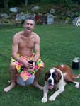

Bondo's a Two-Timer
Run: #859b, October 14, 2002
Hare: Bondo Jovi
Location:
Scribe: Basket
Weather: 50s, after sundown
Present: Basket Boom Boom, Just AJ WIPOS, Oozing, Trail
Hoover (SESYB), Sweet Adorable
The WHO Fallacies:
Run One, Starts at Paragraph One…
· Planning had nothing to do with the success or lack of, on the part
of the Hare.
· The Hashit remained with Oozing, and only
briefly touched the head of the future Grand Master Seamus.
· Instead of Woonsocket Dynamites, the Hare had labored long on thawing
Bondo Chili left over from the Red Dress Hash 2 weeks hence.
Run Doux, Not much being left to his imagination…
· Not one motherless sole joined us for the second half of the day’s
event.
· Async, EverReady and
KNO found fun and fortune far afield of Woonsocket’s favorite son’s grand event.
· There was NO beer stop.
· I repeat, there was NO beer stop.
· Bondo did not, but should have received
the Hashit for UNDERACHIEVING twice in one day.
· Instead Summers Eve Seven Years Bitch won
the prize.
· I did not get naked in the hot tub…..alone….Oozing was in with
me….fully clothed…..Pitiful!
…and now, the fact, plain and simple.
Having eaten as much left over chili one could on a stomach filled entirely too much with Bondo Brew, a large crowd waddled its way down Meadow Road to Cold Spring Park. Being first to arrive, I looked eagerly for the throng of Hashers, that would be gnawing at the bit for another taste, of fine hashing in Rhode Island. After calling out numerous times, I spied a couple cars off in the distant opposite car park. Evidently I disturbed something I long thought would never be found within this cities fair walls, a pair of men in each, quickly pulling clothes into place and speeding off to safer ground. I was not aware of any gays in this neck of the woods. Sure Barrington has it’s sordid corners, but never here!
The remaining pack finally making penguin tracks, over the last hill, into the empty lot joined me. It was like a reunion of lost souls. WIPOS, Sweet Adorable, Just AJ, and Oozing found solace that they could run off the calories packed on during the past two hours. Trail Hoover evidently tried a different method. She decided hot tub and massage were the ticket, having finished a real event this morning. Something about a thousand women running almost naked through the streets of Boston does sound interesting.
The last waddler came over the hill with his trusty dog Ben. Bondo gave us good sound fatherly advice, and pointed us off in southerly direction, following the Blackstone River to Blackstone Street. (what color do you think the stones are around here?) A check fooled none but the hare, and all followed flour to River Street and west over the river and up onto the Rail Road tracks.
The trail was surprisingly well marked, and may have been the accumulation of flour over time. It certainly does pay to place ones flour at specific location causing permanent tortillas at telephone poles and corners. The pack was starting to spread out, with Just AJ leading Basket up the steep incline of Rhodes Avenue. Heeding the suggestion of Basket falling slightly off his pace, Just AJ looked for a check at the corner of Seventh Avenue which would historically bring us back down towards the bridge on St. Paul’s.
Those pacing then selves for the duration, shortcut on Elizabeth and were found later wondering and waddling for a leg up on additional marks. Few had the initiative to reconnoiter on their own. The trail continued through the barricade back onto the track and to Monument Square in Blackstone, Ma. Then straight across Main Street and up the steep Howard Hill, which turns out to be a loop back on to Main.
Here, the pack continued along Main back towards the bastard Hare’s direction, and having not seen Sweet Adorable, and knowing how those horny Frenchmen would gladly sample her wares, I ran back across the tracks and back up that dreaded hill, calling for her, to no success.
I made my way through the back narrows of the city and out again to Cold Spring, where I continued calling for her. A female’s voice drifted over the water to the crest of the hill every time I ran to the bottom heading back to Bondo’s. After 4 tries, I gave up on her, and continued to the On In. What a den of sordid pleasures, was there when I arrived, that I shudder even now as I recall it.
Some were in robes flowing onto the floor. Beer had been spilled on the highly polished floor. Just Big Shit was wrapped in an embrace with Summers Eve straddled in some restricting device, with her head shoved into a kind of bridle. Bondo was in the hot tub, and every one else was in so much disarray, lying about on floor and couch, that I dare not think of the shenanigans that went on in my absence. What did I miss?
Almost everyone was accounted for, with Sweet Adorable deciding one trail was enough for the day, and stayed for a rub down. I do hope they got that on film. All were there except for Oozing, so I went away from the evil there and looked for our Paki on the streets. I drove back along the trail he should have taken, and found nothing. But just as I was parking, I spied a dark shadows making it’s way up Meadow. It was Oozing and he had Ben in tow. Evidently they missed trail, decided to make it a lengthier run and went into the bowels of the city…good for him.
Back upstairs, I discovered the contraption that held SESYB was JBShit’s new massage chair. So I grabbed a beer, and settled in for a good rub. I was a little disappointed that it didn’t include the “wet massage”, but this is the states and some just don’t understand. Having had enough refried Chili for the day, I then stripped down for some serious hot tubbing and beer swizzlin’. Oozing stopped into the room and decided to join me, completely clothed, as mom and dad wouldn’t understand this in Karachi. Just as I pulled him under and sat bare assed on his head for messing with my serenity, someone took our picture. I’d love to see it, and send a copy to the folk’s back home. It’s his face under my ass, and has to be captioned “ Basket has Oozing shit”.
Later on, after massages, more hot tubs, darts, pool, beer and yes even more Chili for the insane, all but Bondo and Just Big Shit made their way farting down to their cars and home. God bless Columbus.
On On,

Basket Boom Boom